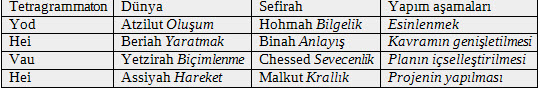

7. BÖLÜM KABALİSTİK TEORİYE GÖRE DÜNYALARIN OLUŞUMU
Kabalistlerin “Dünyalar”’ında, her dünyanın yapısal elementlerini Sefirot’un sağladığı düşünülür. Olamot (Âlemler), Tanrı’nın yaratma sürecinde, ikinci aşamayı içerir. Bu aşamada, Sefirot, Tanrının ilk özü veya ışığından giderek uzaklaşan dört (bazı şemalarda beş) temel dünyanın sırasını düzenler. Herbir Olamot, kutsal varoluşun ayrı bir yönünü saklamaya yardım eder.
Olam (dünya) terimi birçok anlamda kullanılır. Dünya “âlem” (gizli anlamında) etimoloji ile ilgilidir ve Kabalistik doktrinde de bu anlam verilir. Sefer ha bahir’de “Dünyalar”, Tanrının kendisini gizlediği kutsal giysiler’dir. Tanrı, böyle giysileri veya örtüleri çoğaltmak yoluyla üzerinde yaşadığımız fiziksel dünyayı yarattı. Bizim fiziksel dünyamız, Tanrı ışığının en gizli olduğu dünyadır ve kutsal açılmanın sadece küçük bir parçasına sahiptir. Peygamber. Tanrının buna “gizlilerin en gizlisi” dediğini söylemektedir [İsaiah 45:12]. Bu söylem, öğretide Tzimtzum’la da doğrulanır. Aslında Tanrının yaratışının akılsal açıklaması, insanoğlundan gizli kalmalıdır.
Beş dünya, kaynaktan göreceli uzaklıklarına göre birbirlerinden ayrılır, ancak aynı zamanda onları kapsayan <EM SEFİROT EM> alaşımına göreceli olarak karışıktırlar da. Aynı zamanda her bir sefirotu ayrı birer dünya olarak da düşünmeye çalışmalıdır, o zaman herbir dünyada bir sefirotun hâkimiyeti olduğu anlaşılır. Beş dünyanın en üstündeki Adam Kadmon ‘da Keter hâkimiyeti olduğu gibi. Atzilut’da “yakınlık dünyası” Hokmah (Bilgelik), Beriah “yaratılış dünyası” Binah (Anlayış), Yetzirah’da “oluşma dünyası” Chesed’den Yesod’a kadar altı sefirah ve en alt dünya olan Assiyah’da “hareket – yapma dünyası”, en alt sefirah olan Malkut da (Krallık) hakimiyeti söz konusudur.
Dünyalar, insanoğluyla ilgili gerçeği yansıtan ama Tanrı’nın kendisi ile ilgili gerçeği yansıtmayan ve kapsadıkları sefirot gibidirler.
Diğer yandan, Lurianik Kabalistlerin kendi aralarında da, “Nokta’ların dünyası” ve “Yeniden yapmanın dünyası (Tikkun)” arasında önemli bir fark vardır. Bir gruba göre, “Noktaların dünyası” uzayda Adam Kadmon ile Atzilut arasındaki sayısız dünyalardan biridir. Sefirot da bütünüyle bağımsız ve ayrı olup, kozmik felaket olarak bilinen kapların kırılması sırasındaki parçalanmada ortaya çıkmıştır. Kapların kırılması olayının sonrasında parçalanan sefirotlar yenilenmiş, biri diğeriyle birleşmiş böylece Dünyanın yenilenmesi kuvvetlendirilmiştir.
Dirimcilerin söylediğine göre ise, Kapların kırılmasından sonra, noktaların dünyasında sefirotik parçaların yenilenmesinin ardından, dört dünya Atzilut, Beriah, Yetzirah, Assiyah ve altı Partzufim veya kutsal kişilik tamamen biçimlenmiş ve yaratılmıştır.
Neoplatonismi benimseyen Kabalistlere göre, Yaratılış teorisinde; Ain Sof (“sonsuz” Mutlak veya Tanrı) ilk sefirah Keter’i oluşturdu, Keter’den, sonraki sefirah Hokmah ve böylece aşağı doğru sefirot oluşarak en alt sefirah Malkhut’a ulaştı.
Oluşmanın alternatif versiyonu ise; Ain Sof’un Atzilut Dünyasını, Atzilut’un Beriah’ı, Beriah’ın Yetzirah’ı ve onun da en alt dünya Assiyah’ı oluşturduğu şeklindedir.
Bu yüzden, Kabalada Judeo-Hrıstiyan anlayışındaki geleneksel “yokluktan yaratılış” yerine, daha çok, her bir sefirot ve dünyanın tam olarak bitişik dünyalarla yakın bir ilişki içinde olduğu görüşü benimsenmiştir. Bu konuda çağdaş Kabalist yazar Rabbi Levi I. Krakovsky şöyle demektedir:
“... Ain Sof Adam Kadmon’un ruhu ve Adam Kadmon da o ruhun dış kabı olarak sembolize edilmelidir... Adam Kadmon, Atzilut’un ruhu ve aynı şekilde Atzilut da Adam Kadmon’un dış kabıdır. Beriah ise Atzilut’un kab’ı, Atzilut Beriah’ın ruhu, böylece, Assiyah ve Yetzirah’a kadar iner.”
Aynı ilişki, birbirini izleyen diğer dünyalar için de geçerlidir. Bu konuda Krakovski şöyle devam eder; “... Oluşumun dünyası [Atzilut], Yaratılış dünyası [Beriah]’ın kaynağı, aynı şekilde, Yaratılış dünyası, Biçimlenme dünyası [Yetzirah]’ın kaynağı ve böylece döngü devam eder...”
Tıpkı Sefirotik konfigürasyonda olduğu gibi, her alt dünya da kendisinden önce geleni kapsar. On Sefirot, Tanrının on arketip niteliği olduğu gibi onlar da, varoluş planında veya her bir Dünyada tekrarlanır.
Kabala öğretisinde söz edilen, Evrenin yok’tan varoluşu ile ilgili önsel bilgilerden sonra, şimdi de yaratılış aşamalarını göreceğiz.
Bu bölümde, Tzimtzum’un yaratılıştaki vakum etkisini, yaratılışın zincir düzeninin farklı aşamalarındaki detaylarını inceleyeceğiz. Kabalist metinlerde, bu konunun zihinde canlandırılabilmesi ve daha iyi anlaşılabilmesi için, bu aşamaların tanımlanmasında, sıfırdan yeni bir bina inşaatı benzetmesi kullanılır.
Bir çift, önce kendileri için ideal bir ev inşa etmek isterler. Bahçesi, havuzu olan büyük bir ev görüntüsü zihinlerinde canlanır. Bu düşünceden hoşlanan çift, zihinlerinde, yatak odaları, mutfak, garaj, yemek odası v.s çözümlerini ayrıntıları ile canlandırıp geliştirirerek bütün yapıyı zihinlerinde kurarlar.
Bu güzel düşten sonra, bu düşünceyi, kâğıda geçirecek bir mimar ve inşaatı yapacak usta ararlar. Bundan sonra, projenin gerçekleşmesi için finansman gerekir. Bu da bulunup, evin inşaatı bittiğinde çiftin düşü gerçekleşmiş olur.
Dikkat edilirse, ideal bir ev inşaatı süreci, başlıca dört aşamadan oluşmaktadır:
Başlangıçta aniden zihinde ortaya çıkan parlak fikir (kavram)
Kavramın genişletilmesi (kavramın detaylandırılması)
Duyguları da kapsayan gerçek planın çizilmesi
Uygulama (inşaatın yapılması)
Kabalada bu dört aşama, evrenin yaratılışını açıklamak için kullanılır. İlk aşama çok geniş kapsamlı olan kavramsallaşmadır.
Kavramsallaştırmanın ilk düzeyi, Sefirot’un ortaya çıktığı başlangıç aşamasıdır, bu aşama “Olam haAtzilut” Atzilut dünyası olarak adlandırılır. Atzilut sözcüğü, “sonraki” veya “-den çıkmak” anlamına gelen İbranice Aitzel sözcüğünden gelmektedir. Bu dünya Or Ain Sof’un Tzimtzum’undan bir sonraki aşamada ortaya çıkar. Kabala anlayışına göre, sonlu yaratılışın meydana çıkabilmesi için, Tanrının farklı özellik ve niteliklerini betimleyen Tzimtzum aşamasından geçilmesi gerekiyordu.
Daha önceki bölümlerde görüldüğü gibi, Tevratda, Tanrı için farklı İbrani adları kullanılır. Bunlar, farklı Sefirot’u tanımlayan olgularla ilgili isimlerdir. Örneğin, “El” adı Chesed Sefirahının, Tanrı gibi olmak, Tanrının özelliklerine sahip olma halini tanımlarken, “Elokim” adı yine Tanrı özelliklerine sahip Gevurah Sefirahını belirtir, diğer sefirahlar da Tanrı Adları bölümünde anlatıldığı gibi, Tanrı özelliklerinin farklı tanımları ile açıklanır.
Olam Ha’Atzilut (Azilut Âlemi [Dünyası])
Azilut dünyası, kutsal bilinçle Tanrısal kaynaktan yayılmanın dünyasıdır. Bu yayılma süreci, Hassidutta, he’elem v’gilui (“Saklanmak ve keşfolmak”, öz’de saklı duran hakikatin keşfedilme süreci) olarak tanımlanır. Aşağı üç dünya ise, hiçbirşeyden (saklı olan kusursuz kaynaktan), bir şey olan (Bağımsız ve kendi bilinci olan) bütün yaratılmış krallıkların dünyalarıdır. Hassidutta yaratılış süreci etzem v’hitpashtut (“oluş ve kapsayış”), güneşin kendi kaynağında saklı olan ışık ışınını, kendisinin dışında kalanlarda yansıması yoluyla deneyimlemesi, olarak da tanımlanır.
Atzilut dünyası, kendinden önceki Tohu
dünyasından bir anda ortaya çıkan düzensiz yayılmayı, sonsuz ve eksiksiz düzeltme görevini de üstlenmiştir. Aşağı üç dünyanın böyle bir görevleri yoktur. Atzilut’un bu işlevi, yeryüzüne düşen ilâhi kıvılcımdan dünyayı korumak için yapılan, Tanrısal bir yardımdır. “Ve Tanrı yeryüzü krallığında ‘BİR’ olarak anılacaktır”.
Genellikle 4 dünya, 4 harfle yazılan ve Tanrı’nın esas ismi olan HAVAYAH’a benzetilir. Üstünde yod harfi olan Taç’a benzetilen Havayah, Adam Kadmon’un dünyasıdır. Havayah’ın Yod’u Atzilut dünyasının üzerindeki zaman ve boşlukta parlamaktadır. Diğer üç harf Hei- Vav- Hei, hangi kombinasyonla biçimlenirse, dünya o halde olur ve içsel gerçeği yansıtacak zamanı ve uzayı yaratmak üzere aşağı üç dünyanın üzerinde parıldarlar.
Sonsuzluk ülkesinde dingin duran Atzilut dünyasında her Sefirot da sonsuzdur. Yokluktan yeni çıkmış olması Azilut dünyasının en önemli özelliğidir. Önceden, olasılıkla diğer yaratılanların da var olmasına karşın, bunlar tümüyle Or Ain Sof tarafından örtülmüş durumdaydılar. Atzilut dünyasında Kutsallık bütünüyle duyumsanmaktadır ancak henüz hiçbir bağımsız varlık bulunmamaktadır.
Yukarıda belirtildiği gibi, yaratılışın her bir aşaması, Tetragrammaton’un dört harfinden birisi ile ilişkilidir. Atzilut dünyası Yud harfi ile betimlenir. Bu harf nokta şeklindedir ve diğer harfler arasında en küçük olandır. Diğer bütün varlıkları geliştirebilecek tam bir noktadır. (Sperme benzerliği düşündürücüdür)
Yud harfi aynı zamanda Hohmah sefirahı’na da uyar. Bütün on sefirot, her dünyada bulunur ancak her aşamada bir sefirah (veya Sefirot grubu) ağır basar. Azilut dünyasının baskın sefirahı Hohmah’tır.
Atzilut dünyası, bir başka yaratılışı açığa çıkaracak potansiyeli içinde barındırır.
İnşaat örneğinde gördüğümüz, bağımsız varlığın bazı biçimleri zihin içinde binaya uygulandığı gibi, İkinci aşamada, yaratılışın bir ileri gelişmesi için ilk kavram çözülür ve plânlanır.
Atzilut, “Oluşumun Dünyası” veya “Yakınlık (Tanrı’ya)”, aynı zamanda Cennetsel adam (Adam Kadmon” olarak da adlandırılan), Kutsal gerçekliktir: Tanrının özellikleri veya Sefirot, Ain Sof’dan dolaysız olarak varolmuşlardır ve bu yüzden Mutlak Tanrısallıkla çok özel, mükemmel ve değişmez bağları vardır. Kral ve Kraliçe’nin birleşmesi ve dünyaların birbiri ardınca üretilmesi buradadır (Tifaret ve Malkhut, Tanrının kutuplaşmasında eril ve dişiliği temsil ederler).
ATZİLUT, ateşin, derin kutsal sezgilerin ve Tanrı ile olmanın holistik dünyasıdır. Gerçek karışıktır ama her şey bir’dir. Bu dünya, öz’ün dünyasıdır ve bu dünya ile Tanrı ateşinin kıvılcımından oluştuğumuzu anlarız. Bu dünyada, biz kendimizi Tanrının gözü ile görürüz. Ruh olarak, Chaya ve Yechidah’a
karşılık gelir. Öğretide, Kabalistik Birlik dünyasıdır, Sefirahı Hokhmah, Ruh ilkesi: Hayyah ve Yehidahtır. Tanrısal hiyerarşide Sefirot ve Partzufimdir.
Atzilut – Lurianik sistemde:
Lurianik sistemde Atzilut evreni, Partzufim (Kutsal yüzler) ve Tanrı Kişiliklerinin evrenidir.
Partzuf teorisinin teolojik açılımında, Tanrı’dan gelişen ve açılan oluşmanın organik bir süreç olduğu anlaşılmaktadır. Bir başka deyişle, geleneksel Teizm’de olduğu gibi Partzuf’dan, değişmez ve sonsuz varolan Kişi anlaşılır. “Kişi” için değişim ve transformasyon çok doğaldır; sadece kişisel olmayan Mutlak, değişimin ötesindedir.
Luria sisteminin yaratılış hiyerarşisinde, Tanrısallığın bu alt derecesi, Ze’er Anpin (“alt yüz”) olarak, Tanrının kişisel yaratıcı duygusu ile ilişkilidir. Kişiselleşmiş Tanrının eril ve dişil kutuplaşması Ze’er Anpin ve Nukvah’ın ötesinde olup daha yüksektedir ve Baba (Abba) ile Anne (Imma) diye adlandırılır. Yine onların ötesinde Arik Anpin ve onun da ötesinde yüksekte ve daha aşkın Adam Kadmon yer alır ve son olarak da Ain Sof (görülmeyen Mutlak) gelir. Sonuçta, kutsal hypostases’de
sayısı bir olan biricik Kişileşmiş Yaratıcı Tanrı görülür.
Luria, Partzufim düşüncesini Zohar’dan almış ve formüle ederek Kutsallığı Partzufim sayısına (genellikle 5 veya 6) bölmüştür. Bu bölünme, Kutsallığın ortaya çıkmasının veya açılımının 5 aşamasına karşılık gelir. Partzufimler şunlardır.
Atika Kadisha, Keter sefirah’ının üstündedir. “Kutsal Kadim Bir”
Atik Yomin, Keter’in üst kısmı. “Günlerin Kadim’i”
Arik Anpin, Keter sefirah’ının dış partzufu. “Makroprosopus” veya “Büyük Karşılık”’tır; “Uzun Acı” veya Bağışlayıcı’dır.
Abba, Hokmah sefirahı ile ilişkilidir. “Baba” olarak, Tanrı’nın aşkın eril tarafıdır. (Tanrı tüm karşıtlıklara olduğu gibi “eril-dişil” cinsiyet karşıtlığına da sahiptir)
Imma, Binah sefirahı ile ilişkilidir. “Anne” olarak Tanrı’nın aşkın dişil yanıdır.
Ze’er Anpin, Hesed’den Yesod’a kadar diğer altı sefirot ile ilişkilidir. “Mikroprosopus, Küçük Karşılık” veya “Kısa ılımlı”’dır. “İsrael’in Tanrısı” veya “Yaratıcı Tanrı”dır. Aynı zamanda Tanrı’nın zayıf eril yanıdır.
Nukvah, Malkhut sefirahı ile ilişkilidir. “Dişil” cinsiyet olup Şekinah’tır; İsrael’in Tanrısının huzurudur; Tanrı’nın gelinidir; Kutsal içkinlik ve Tanrı’nın zayıf dişil yanıdır.
Partzuf, birliğin tamamlanmış ve kutuplaşmış olan dualite’nin arasından geçerek ilerlemesini temsil eder. Dikkat edilirse, burada diğer düşünce sistemleri ile de paralellikler görülür. Önce birlik pozisyonu, sonra birlik içinde kutuplaşma ve sonuçta ikilik ve çokluk.
Biraz ileride Sefirot bölümünde ayrıntılı olarak görüleceği gibi, Kabala yaratılış teorisinde, sonsuz ve bilinmez tanrı (Ain Sof) ile dünyamız arasında 10 yaratıcı güç vardır. Tanrı evreni bir akım şeklinde bu güç/ler aracılığı ile yaratır ve yönetirken, insan için yeryüzüne Merhametini/Şefkatini (Erkek, sağtaraf) ve Adaletini (dişi, sol taraf) de göndermiştir.
Sefirot, Dört dünyaların her birinde bütün sefirot olarak, özel ilişkileri ile birlikte yer alır. Ancak bilindiği gibi, Atzilut dünyası zamanın dışındadır ve diğer üç dünyayı (Beriah, Yetzirah ve Asiyyah) kapsar. Bu nedenle Atzilut “kendisinin içinde”Sefirotun saf özüdür.
Atzilut dünyasının 10 Sefirotu, rûhun 10 aslî gücü olarak, aşağıdaki 3 dünya ile, 3 giysi gibi, düşünme, konuşma ve hareket ilişkisi kurar. Yukarıda, konuşma dünyasında kendini ifâde etmenin bütün formları açığa çıktığı halde, 3 aşağı dünya olan Beriah, Yetzirah ve Assiyah ile ilişki, rûhun gerçek giysisi (rûhun kendisi de denebilir) olan Atzilutun Malkhutu aracılığı ile kurulur.
Yukarıda açıklanan, Atzilut’un dünyası (Çocukluğun bilmezliği, gençliğin isyankârlığı ve yaşanarak öğrenilen yetişkinliği de barındıran) Mutlu bir “aileye” benzetilebilir.
Aşağı dünyaların görevi, aşağı düşen kıvılcımlardan yükselmeyi hak edenleri yükseltmektir. Buna profesyonel iş yaşamından bir örnek verebiliriz. Buna göre; Bir insanın seçebileceği 3 pozisyondan, iş adamlığını Assiyah dünyası’na (Hareket dünyası), danışmanlığı Yetzirah dünyası’na (konuşmanın dünyası) ve iş’in uzmanlığını da Beriah dünyası’na (Düşüncenin dünyası) benzetebiliriz.
Atzilut dünyasını açıkladıktan sonra, şimdi de sıra, Atzilut dünyasının üç aşağı dünya ile ilişkilerini açıklamaya geldi.
Olam Ha’Beriah (Beriah Âlemi [Dünyası])
Bazı şeyler sadece teoride yaratılmışsa da “yaratma” sözcüğü her zaman, hiçbirşeyden (ain) bir şey (yesh) yaratma anlamına gelmez, ikinci dünya Beriah dünyası (Yaratılış) olarak adlandırılır..
Atzilut’un başlangıçta sahip olduğu kavram, Beriah’ta en-boy ve derinlik olarak genişletilir. Hei harfi Beriahın hâkim Sefirahı Binah’a uygundur, Binah, Hohmah’ın ilk kavramını bütün ayrıntıları ile geliştirir.
Beriah dünyası Atziluttaki Sefirot’un ortaya çıkardığı ilk açılımı alır ve onları bağımsız birer varlık haline getirecek bazı formları yaratır. Atzilut’un “etkisiz bırakması” (Bittul) nedeni ile, hiçbir şey bağımsız olarak var olamaz.
Beriahta duyumsanan Kutsallık, Atzilut’a benzemez, Beriah bazen hareketsiz kaldığında tümüyle etkisiz ve Tanrının dışında gibi duyumsanır. Bu yüzden Beriah dünyası “Kutsal Taht” dünyası –Kisei Hakavod olarak adlandırılır. Aslında, bir taht, üstündeki insan bedeninin hareketini kısıtlayan süslü bir iskemledir. Bu yüzden Kutsal Taht, diğer dünyalar ile Kutsal ilişkiyi kısıtlayan bir düşüncedir.
Beriah, “Yaratılış Dünyası” ve “Taht” olarak adlandırılır. Beriah’ın varlığı, Ain Sof’dan çok uzaktadır, canlılığını Azilut’dan alır, bu yüzden Atzilut, Beriah’ın “ruhu” dur. Bu nedenle kutsal doğum veya varoluş gücü, Beriah’da Atzilut’dan daha düşük şiddettedir.
Ain Sof’a oranla yetenekleri daha sınırlı olup yapısı, en saf ve katışıksız maddeden oluşmuş Atzilut evrenindeki sefirottan daha uzakta olan on sefirotu içerir. Beriah dünyası, ilk Yaratılış veya Çıkış Dünyasıdır ama aynı zamanda, Atziluta yakınlığından dolayı, son derece yüce ve ruhsal olan baş meleklerin de bölgesidir. Metatron meleği bu dünyada oturur. Bu dünyayı, Shaddai giysili saf ruh oluşturur, e.d. Kutsallığın, görülebilen oluşumudur. O, görülebilen bu dünyayı yönetir, uyumu korur ve sayısız meleklerin başıdır.
Beriah dünyası Zoharda, yedi yüksek cennetten veya Atzilutun yedi alt sefirotundan doğmuş olan gökyüzünden oluşmuş bir dünya olarak yer alır (geleneksel sabit yedi yıldız veya gezegen’in dışında).
Bu dünyada da, melekler Tanrının tahtının etrafındadır.
Lurianik gelenekte, bu dünya Tzimtzum’un ilk duyumsandığı yer olduğu için bireysel varlığının oluşma yeteneği vardır.
Beriah dünyasında, ruhlar ve yüksek meleklerin yaratılışını da görürüz. Melekler (malachim), öykülerde anlatıldığı gibi, gökyüzünde bir yerden biryere uçuşan yaratıklar değildir. Onları Kutsal enerji akışının kanalları olarak düşünebiliriz ve onlar dünyaya enerji akışını sağlarlar. Beriah dünyası melekleri, İbranice Seraiphah (alev) sözcüğünden gelen Seraphim olarak adlandırılır. Bu yüzden bu melekler “yanma” duygusu verirler. Bu aynı duyguyu kapsamaz ama onların dayanılmaz bir yoğunlukta Tanrıya yakın olması, ruhsal coşkularından kaynaklanan kararlı bir duruş sergilemelerine yol açar. Beriah dünyası aynı zamanda, dünyadaki çabaları sonucunda ödüllendirilmek üzere bu yüce ülkeye girmeyi hak eden ruhların geldiği Yukarı Eden bahçesinin yeridir.
Beriah, hava’nın, intellekt’in (aklın), dalınç’ın (contemplation) ve saf düşüncenin sembolik dünyasıdır. Bu dünyada her şey örnek parçaları halindedir ve her şey anlamdır. Biz burada kendimizin, tasarlanmış bir sonuç olduğumuzu, aşkı ve yaratılışın sürekliliğini anlarız. Burada düşünülebilecek ve anlaşılabilecek olanlara ulaşmaya çabalarız. Bu şiirselliğin gerçeği, hayret, sezgi ve hayâldir. Bu dünyada rüyalar ve semboller aracılığı ile çalışabiliriz.
Beriah dünyası, Binah sefirahı ile tanımlanır (ya da Binah, Beriah ile), bu bölge kutsal ruh (Neshemah)’dan türemiştir. Tetragrammaton-da He harfine karşılık gelir.
Olam Ha’Yetzirah (Yetzirah Âlemi [Dünyası])
Sonraki aşama Yetzirah dünyasıdır. Bu dünya, gerçek yaratılış için sınırlı dünya plânlarının çizildiği yerdir.
Bu dünyada, Chesed’den Yesod’a kadar olan 6 duygusal Sefirot hakimdir. Bunlar, Tetragrammaton’da vav harfine karşılık gelirler.
Bu dünya, proje formları ile duygusal bağların yeridir ve kendi kendine devinir. Bu son proje sadece daha uzun süreli bir kavram olmayıp aynı zamanda, düşüncenin gerçekleşmesi aşamasında somut adımlar gerçekleştirir. Kutsal ışıktan mutlu olmayı hak eden ruhların yeri olan Aşağı Eden Bahçesi buradadır.
Yetzirah dünyası bir ara düzeydir. Yaratılış sürecinde, Yüksek ruhsallık (Beriah) ve alt ruhlar (Asiyah) arasındaki geçiş derecesidir. Bu aşağı ruhlar dünyası açıklaması, Sühreverdi ve İbnî Arabî’nin “İmajinal” dünyası ile büyük benzerlik gösteririr.
Yetzirah Dünyası, halâ Tanrısallığın uzağında olan on sefirotu kapsayan “Biçimlenme Dünyası”dır. Kendisinden önceki Beriah dünyası kadar saf olmamakla birlikte henüz maddeleşmemiştir. Burası, ışık saçan giysileri olan meleklerin bulunduğu yerdir. Sayısız melek, on sefirota göre on dereceye bölünmüştür ve her melek evrenin farklı parçasında oturur, adını da koruduğu element veya cennetsel beden’den alır.
Zoharda bu bölgeden, gökyüzündeki yedi gezegeni kapsayan, aşağı cennet olarak söz edilmiştir.
G. Scholem’e göre Merkezde Başmelek Metatron’un ve onun etrafında da meleklerin olduğu bir dünyadır.
Yetzirah, su’yun ve yaşamın duyumsandığı öznel dünya olduğu gibi ayrıntının, havanın (aura), iç ve dış duyarlılığın ve sezginin de etkili olduğu dünyadır. Bu dünyada görünen şeyler, içinde oldukları dünya ile senkronize (eşzamanlı) halindedirler. Burası karşılıklı dayanışma ve ilişki dünyasıdır. Burada duyumsal oluşumumuz, minnettarlığın, mutluluğun ve değerbilirliğin yerine kızgınlığın negatif duyumsamasına, düş kırıklığına, kinciliğe ve paranoyaya ayak uydurabilir. Biz burada senciliği (Empati), insancılığı ve ölümlülüğümüzün farkında olmayı öğrenebiliriz. Ruh olarak Ruah’a karşılık gelir. Hesed’den Yesod’a kadar altı sefirot ile ilişkilidir, Tetragrammatondaki yeri ise Vau harfidir.
Yetzirah dünyası, Chayot Hakodesh (kutsal oluş) olarak adlandırılan meleklerin ülkesidir. Burada da melekler, adlarını ilişkide oldukları Sefirottan alırlar. Örneğin, Mikael meleği, Chessed sefirahı ile, Cebrail Gevurah ile ve Raphael Tiferet ile uyuşur. Amidah’ı
tekrarlayarak Kedushah dendiğinde üç kez “Kadosh” denmiş olur ki bu durumda, Beriah, Yezirah ve Asiyah meleklerinden söz ediliyor demektir ki bunların hepsi birden Tanrıya saygıyı ifade etmenin farklı yollarıdır.
Ezekielin vizyonu (Ezekiel 1.) aslında, Yetzirah dünyasına meditatif tekniklerle girme denemesiydi. Bu deneyini insanlara aktarmak istediğinde, yaşadığı metafizik fenomeni anlatmak için konuşma dilini kullanmak zorundaydı. O, Yetzirah dünyasında melekleri yaratık şeklinde betimler. Altındaki Asiyah dünyası meleği Ophanimdi. Beriah dünyasının tahtı kendisinin üstündeydi. Atzilut dünyasının düzenine göre Tahtta oturanı insan şeklinde tanımlıyordu. İşaya’nın kehaneti Beriah dünyasının içine aynı derinlikle girdi ama onun sonradan gelen açıklaması çok daha az detaylıdır.
Olam Ha’Assiyah (Assiyah Âlemi [Dünyası])
Son olarak, dördüncü dünya Assiyah’tır (eylem dünyası), yaratılış burada gerçekleşti. Kutsal yaratıcı akış, Yetzirah dünyasından melekler aracılığıyla aşağı doğru, dört krallık olan, Mineral, Sebze, Hayvan ve insan yaratılışının içine aktı. Assiyah dünyasının hâkim sefirahı Malkhut’tur. Assiyah, henüz Tanrı yanında Kralın kul gibi kabul edildiği yerde, yaratılışın toplam bağımsızlık biçimini aldığı dünyadır.
Assiyah dünyası biraz aykırıdır. Usta Yaratıcı, üstün sanatçı, en güzel ve çeşitli yaratıklar yarattı. Tanrının yarattığı yalnızdır ve bu düzeyde, henüz Tanrı saklıdır onun yarattıkları yaratıldıklarının farkında değildir. Tanrı tamamen saklı olduğundan, bu dünyada Tanrının orada bulunuşunu tümden yadsımak mümkündür. Tanrının tamamen gizli olması, dünyaya özgür ülke olma seçimini yapabilme olanağı verir. Bu dünya, yaratmanın son amacıdır, O, yarattığı yaratıkların ve evinin bu dünyada olmasını istemiştir.
Gerçekte dünyalar, güneşten çıkan ışınlar gibi sadece Kutsal yaratıcı yeteneğin ortaya çıkmasıdır ama yüksek ülkeden Işığın ortaya çıkması, bu dünyada anlaşılamaz, onu gerçekten Atzmut (Tanrının özü) değerlendirebilir.
Bu dünyada biz, kendimizi Tanrı özelliklerini taşıyan akıştan farklı ve ayrı olarak algılarız ve bağımsız varoluşu duyumsarız, Tanrının özünü ancak en yüksek derecede görme iznimiz vardır.
Assiyah dünyası, yaratılış sırasına göre son dünyadır veya yaratılmış gerçekliğin sonudur. Bu dünya sadece maddeyi değil aynı zamanda aşağı psişeleri ve yaratılışın negatif güçlerini, kelipot olarak adlandırılan “kabukları” da içerir. Bir başka deyişle, hem fiziksel ve gizli gerçekliği hem de kaynağından ayrılmış olan “aşağı” dünya bölümlerini eşit şekilde içerir.
Assiyah’ın anlamı “yapılmanın dünyası”dır. Kabalistik okulların anlatımlarında detay farklılıkları bulunmasına karşın, yine de Assiyah Evrenini, fizik veya maddeden düşen yaratılışın “kabuk”ları ile alt-ruhsal veya aşağı dünyaların oluşturduğu konusunda bir uzlaşma vardır.
Zohar, dünyaların gelişmiş kozmolojik bir doktirini olmamasına karşın, madde dünyasına, değişim ve bozulma dünyasına ve günahkâr ruhların bölgesine ilişkin göndermeler yapar. Bu bölge en kaba sefirot bölgesidir, kaba maddeden oluşmuştur ve her biri diğerinden daha aşağıda olan on derece vardır. Alternatif olarak, yedi dünya (büyük ihtimalle insanın dünyası olan, e.d. fiziki evren) altında diğeri ve altında en aşağıda olanlar, yedi cehennem ile ardışıklığın yeniden düzenlenmesi yer alır
Assiyah, yeryüzü, nesnel dünya, bedenimizle yaşadığımız eylemlerin fiziksel dünyası ile ruhsal amaç ve eylemlerimizi de içerir. Bu dünya, somut gerçekler ve onların verileri olan duyguların dünyasıdır. Biz bu dünyada, fiziksel krallık ve gözlemlediğimiz doğa yasalarının bilincindeyizdir. Burada Tanrı’nın yarattığı oluşumun farkındayız. Burası, her şeyin ayrılığının gözlemlendiği ve öznel sebep sonucun olduğu, ikiliğin (Dualite) dünyasıdır. Burası aynı zamanda Tanrının oluşturduğu yaşam gücünün, duyguların, soluğun, yaşama aşkının ve özgürlüğün deneyimlendiği dünyadır. Ruh olarak Nefesh’e karşılık gelir. Malkhut sefirah’ı ile ilişkilidir, Kutsal hiyerarşide Ofannim’e uygundur, Tetragrammatonda, son Hei harfidir.
Assiyah dünyası, evrenlerin en alt derecesi olduğu için, buradaki melekler, sadece az iyiliğe ama çoklukla günaha sahiptir. Bu derecede iyilik ile kötülük içiçedir. Bu nedenle, Assiyah dünyası, iyiliğin ve kötülüğün, gerçek ve yalanın kombinasyonu olarak algılanmalıdır.
Yaratılışın dört dünyası ile Tetragrammaton ve Sefirot ilişkisi:

Tablo 11: Dört dünya-YHVH-Sefirot ilişkisi
Arba’ah Olamot Yasaları (Dört Âlem-“Dünya”)
Dört Dünya, planetler gibi dizilmez, daha çok (Ain Sof’tan) “çıkmanın evreleri” olarak düşünülür. Başka bir bakış açısına göre de bu evreler, Genesis’de anlatılan Yaratılışın “altı gün”ü ile farklı bir “yaratılış süreci” olarak ilişkilendirilir. Ain Sof’un kaynaktan ileri doğru (Atzilut’dan Assiyah’a) ilerleyen ışığının, daha çok fiziksel ve daha çok kendine özgü olan yasaları vardır.
Atzilut (Oluşum) - Sonsuz değişmez Kutsal dünyadır.
Beriah (Yaratılış Dünyası) – Kutsallıktan ilk ayrılma olup tam olarak tasarlanmış “Cennet”tir. Tanrı ve başmeleklere ait Taht konumundadır.
Yetzirah (Biçimlenme Dünyası) – “aşağı melekler”in konutu olup insan’ın ruhu ve Eden Bahçesidir.
Assiyah – (Eylem/Aksiyon Dünyası) – İçinde yaşadığımız madde evrenidir.
İşaya kitabında anılan dört dünya, yaratılışta birbirleri ile ilişki halindedir. [İşaya 43:7] “görkemimle yarattığım, biçimlendirdiğim ve yaptığım Adımla çağrılan her birini...”
Ezekiel’in vizyonu, ilk dünya olarak Assiyah’ın fiziksel sunuluşundan başlar [Ezekiel 1. bölüm]. Onun gördüğü “Chariot” (Araba) Yetzirah’tır, Chariot’un “Taht’ın benzeri” içinde uzanan üçüncü dünya Beriah’tır. Son olarak, tahtın üstünde “insan benzeri görüntü” Atzilut’un Kutsal dünyasının varlığıdır.
Ezekiel’in anlatımında sadece Yetzirah açık olarak anlaşılmaktadır. Beriah ile ilgili olarak ise (Yetzirah düzeyinden uzak bir dünyaydı), sadece “Taht benzeri”nden söz etmektedir. “Azilut’un içindeki görüntü daha belirsizdi, bu yüzden sadece “insan görüntüsü benzeri” gördü (her iki dünya da Yetzirah’tan uzaktı).
Zohar’da sadece dört dünya veya evren (varoluş plânı) varken, Lurianik sistem Tanrı’nın açılımında, dört alt dünya ile Ain Sof arasına, beşinci evren olarak Adam Kadmon’u da eklemiştir. Bundan dolayı, Lurianik kozmolojide, sıralama aşağıdaki gibi olmaktadır:
* Ain Sof - Mutlak veya sonsuz – bütün arketiplerin ötesinde
1- Adam Kadmon – Tetragrammaton veya Kutsal Ad,
2- Atzilut - Sefirot veya Kutsal Arketipler ve Partzufim veya Kutsal Kişilikler,
3- Beriah - Başmelekler ve Kutsal Ruh (Neşamot),
4- Yetzirah - Melekler,
5- Assiyah - Aşağı melekler ve kelipotlar; Fiziksel dünya.
Diğer önemli bir nokta da, diğer Kabalistler Ain Sof ile Tanrı’yı hemen hemen aynı tutarken, Luria’da Tanrı, Atzilut dünyasında veya en azından en yüksek yüzlerdedir. Luria bu kutsal yüzlerden kısaca Partzufim olarak söz etmektedir
Her yüksek dünya “üstün görüş”, “güç”,”irade” veya “bağışlama” nitelikleri ile altındaki dünyaya hizmet eder. Veya basit dille, her üst Dünya göreceli olarak komşu dünyanın “ruh”u veya Yaratıcısıdır.
Bundan başka, Sefirot’un her birini, akıl-parçasına böler ve yine her biri daha alt- sefirota ayrılır. Dünyalar doktrininde de aynı şekilde, alt bölüme ayrılma vardır. Böylece Atzilut’un Atzilutu, Atzilutun Beriahı, Atzilutun Yetzirahı, Atzilutun Assiyahı, Beriahın Atzilutu, Beriahın Beriahı ve böylece Assiyahın Assiyahına kadar aşağı iner.
Rabbi Moses Cordovero bunu bir analoji (örnekseme) ile şöyle açıklar
Gümüşçü, gümüşü mâdenin saflığına göre değerlendirir: ilk önce en saf derecedeki gümüşü, mâdenden çıkmış ham kitleden ayrıştırır (özgürleştirir), ikinci olarak, kalan kitlede birinciden daha az saf olanı, üçüncü olarak yarı saf yarı karışık kitle ve dördüncüde ise artık gümüşten daha çok maden vardır. Yine de ilk arıtmada bile tamamen ve bütünüyle saflaşma olamaz, her zaman içinde bir miktar cüruf kalır. Hattâ ilk derecede de kendi içinde yine dört saflaştırma işlemi yapılabilir. Aynı uygulama diğer dört derece için de yapılabilir.
Tabii burada oluşma ve yokluğun (eksikliğin) temel ilkesini buluyoruz; Kutsal öz’ün (“gümüş”) derecesi veya varlık planlarının eksiklik derecesi belirlenmektedir. Bu kavram, Neoplatonizmde çok geniş biçimde rol oynayan önemli bir kavramdır ama asıl büyük gelişmeyi Safed Kabalistlerinde özellikle Cordovero ve Luria’da kazanmıştır.
10 Sefirot ve Partzufim, üstteki Atzilut dünyasının içinde ve dört dünyada da tanımlıdır. En yüksek dünya Atzilut, Kutsal birliğin tek ve özel bilincini taşıdığından, çoğu kez diğer 3 alt dünyayı (ki her birinin kendi değişken bilinçleri vardır) da betimler.
Kabalistik yaratılış teorisinde, gerek yaratılış öncesi ve gerekse yaratılış evreleri ile, İslâm/Sûfi geleneğinde öne sürülen yaratılış teorileri arasında çok büyük benzerlikler görülmektedir. Kitabımızın sınırlarını zorlamamak ve sadece ilgilenenlerin dikkatini çekmek üzere, aşağıda bu konuda, basit bir karşılaştırma özeti sunulmaktadır.
Sûfi Yaratılış Teorisi
Sûfi yaratılış teorisine göre, Evrenin Tanrı tarafından yaratılışından önceki oluşumun, üç boyut/mod’u vardır ve yaratılan evrenin üç dünyası onu izler.
1. Âlem, anlaşılamaz Tanrı’nın özü’dür: Görülmeyen Tanrı’nın dipsiz uçurumu olarak nitelenir. Sûfi geleneğindeki bu âlem ile ilgili terimler ise; Gayb ul Gaib (Gizlerin gizi / Sırların sırrı), Âmâ (Karanlık), Zât (Öz). Bu âleme uygun düşen ruhsal evre’nin adı ise Ahâdiyet – Teklik’tir.
2. Âlem ise Görülen Mutlak/Tanrı’dır. Sûfi terimlerinde Er-Ruh al Kûdsi (Yüce Ruh), Akl-ı Evvel (İlk İntellekt/Akıl) veya Akl-ı Külli (Evrensel Akıl) olarak adlandırılır. Uygun olduğu ruhsal evre adı ise Vâhid – Bir’dir.
3. Âlem, Kutsal adlar ve nitelikler’den açığa çıkan Tanrı’nın yaratıcı enerjisi’dir (Âyan-ı sâbite). “Enerji”/yaratıcı bakış, Kuran daki kavramı ile, Nefes-i Rahmânî ile temizlenir. Aynı zamanda Nefs-i Külliye (Evrensel Ruh) olarak adlandırılır. Ruhsal evre adı Vahdaniyet – Birlik’dir.
Yaratılışla ilgili ikinci doktrin iki kavram ile işler
1. Açığa çıkmamış Mutlak (Âlem-i Hâhut / “O’nun” “dünyası”, Hûva [Belirsiz üçüncü şahıs]), Arapçada, Tanrının açılmadan önceki öz’ü olarak adlandırılır “Dünya” sadece sembolik bir referanstır. Bu açığa çıkmamış boyut, sıklıkla sadece Hâhut için kullanılır. Ruhâni aşamadaki yeri ise Ahâdiyettir.
2. Açığa çıkmış Mutlak (Alem-i Lâhut / Tanrı “dünyası”, Al-Lah gibi “Lah” kökünden gelmektedir). Ruhsal evresi konusunda farklı görüşler vardır, bazan Vâhidde bazan da Vahâdiyette gösterilir. Yukarıda açıklanan her iki doktrinde de evrensel yaratılış açılımının evreleri için aynı terminoloji, “tenezzülât” kavramı kullanılmıştır.
3. Âlem-i Ceberrut / Kuvvet dünyası Aynı zamanda Âlem-i Ervah’tır (ruhlar dünyası).
4. Âlem-i Melekut / Melekler dünyasıdır.
5. Âlem-i Nâsut / İnsanlık dünyası’dır.
Yukarıdaki açıklamalar, Neoplatonist ve Hermetik sınıflandırmalar ile birlikte aşağıdaki tabloda gösterilmiştir.
Tablo 12: Karşılaştırmalı yaradılış teorileri